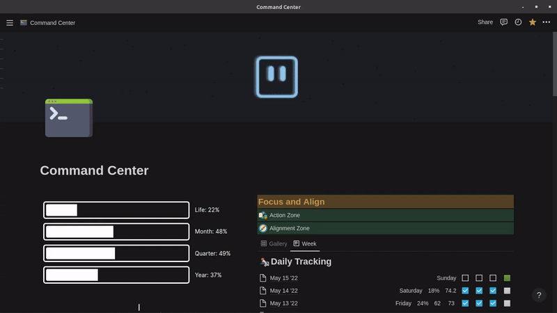

How to make your Notion workspace run faster: Part 1
Mar 2 '22 • Written by Yassen Shopov
📖 7 minute read
As you will know, if you are a regular on this blog, I love Notion.
For those of you unfamiliar with Notion, first of all, interesting choice of an article to read. Secondly, Notion is an all-in-one productivity software.
It allows you to create productivity systems of your own liking. Its flexibility is its biggest asset - you can create a simple database to store all your University notes, or you could create a complex cross-database system to keep track of all your tasks. People have been using Notion extensively ever since its launch in 2016 to create projects such as:
Movie and book list databases
Website building inspirations
To-do lists
Habit trackers
However, many people’s main concern with Notion is its undeniably low loading speed (when compared to other apps). Since its founding 6 years ago, the company has expanded rapidly, but there appears to be a lag between the users’ expectations and the developers’ capabilities. And even though Notion is actively working on optimising the app, having already achieved a 50% speed increase since 2021, the app still takes a few more seconds to load than what most of us find convenient.
The startup lag is one thing, you can just run the application then forget about it for a minute and come back to it when it loads. The problem comes when you try to do either one of the following three actions:
Search for a specific page with the “search“ function.
Attempt to load up a page with a lot of database entries.
Switch between pages.
You may be thinking to yourself now, “Well, if Notion has such bad speed, why not use another app?“. And you could be using another app, that’s true. However, Notion's flexibility and the ability to get customised to your own needs is unmatched, and it is so far the most versatile productivity tool I’ve come across. You can see my own productivity dashboard over here, and I have to say, it has helped me stay productive as a student and freelancer for years now.
And luckily, there are ways to increase Notion’s loading speed incrementally, by applying some simple strategies. In Part 1 of this article series (the one you’re reading right now), I will go more into detail for the “hacks” you can use to reduce the impact on the Notion app in a purely technical way. In Part 2 (linked over here), I will go into the more systematic approach you could use to build Notion in an easily accessible way, without worrying too much about technicalities.
Reduce the size of your images
This is the first and most common piece of advice you will hear on the topic - reduce your image use.
Yes, we all love Notion for letting us create powerful and beautiful layouts. You could have customised icons, gifs as cover images, etc. I actually use a similar template right now, and I must admit that every time I run my Notion app, the fan starts wrooming louder.
As you can see, even though it looks pretty, it has so many widgets and moving parts that the loading speed decreases tremendously. And while this isn’t really a dealbreaker for me, many people would find this discouraging. So here are the ways you can keep your aesthetics while increasing the speed.
When using an icon/cover image, first download it, then reduce it to a “.jpg” or “.jpeg” file using a website such as “Resize Images Online“. This way, Notion takes a shorter amount of time to actually load your icon and header.
Even if they seem pretty, avoid the use of gifs in your icons and cover, especially if the gif size exceeds 30 MB.
Archive old content frequently
Year-long users of Notion like myself are guilty of hoarding so much information.
My to-do list database contains so many tasks right now, I believe last time I checked my stats for 2021, it contained 3,000+ items.
Imagine the sheer volume of data this is - 3,000 pages, all of which have some properties, content, images attached to them. No wonder Notion makes my laptop pass out upon loading.
So what I have started to do, periodically, is to get rid of the first few months of data for my more complex databases. Note, I don’t just delete those items, I make a backup copy of my entire Notion workspace.), and then I remove them, knowing that even if I need anything random, I can restore it easily later on.
Avoid the use of complex widgets just for the “aesthetic“
Notion’s users have been creating widgets small and big for years now.
From simple clock widgets to progress bars, stock-trading panels, dynamically activated images, almost anything that you want to add to Notion, you can. However, most of those apps refresh themselves almost every second, which means that they are continuously connected to the Internet, further draining Notion and decreasing its speed.
What I would suggest is that you don’t overwhelm your workspace with a ton of complex widgets just for the sake of aesthetics.
Do you really need that progress bar to see how much of the month has passed already? Is Notion really the place where you should be tracking stocks 24/7?
There are some cases in which less is more, and minimalism’s strongest asset in this realm is that your Notion workspace will be faster than ever.
[4:19]
by 25 Hour Day